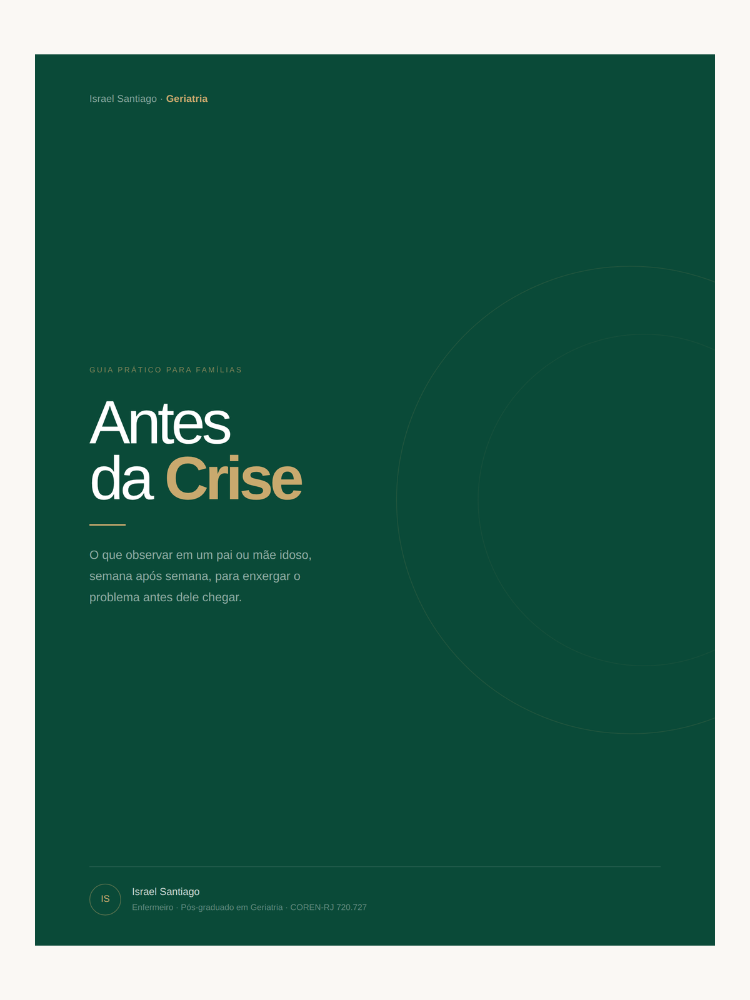
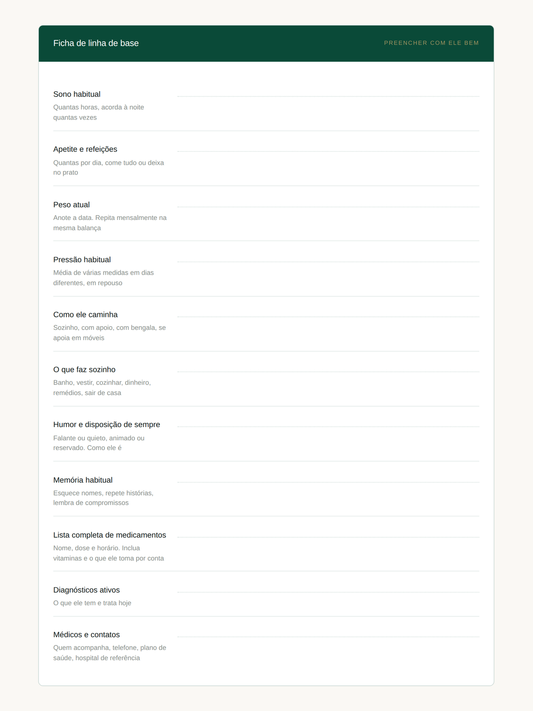
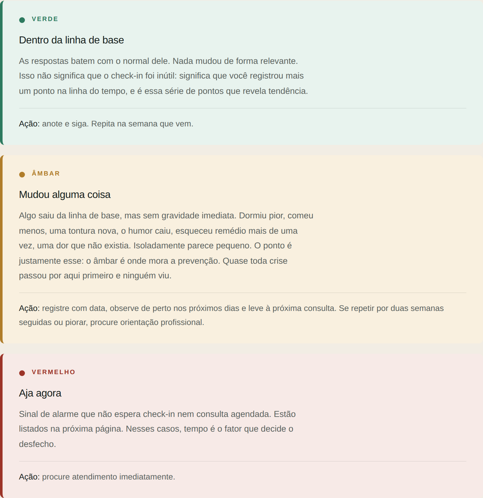
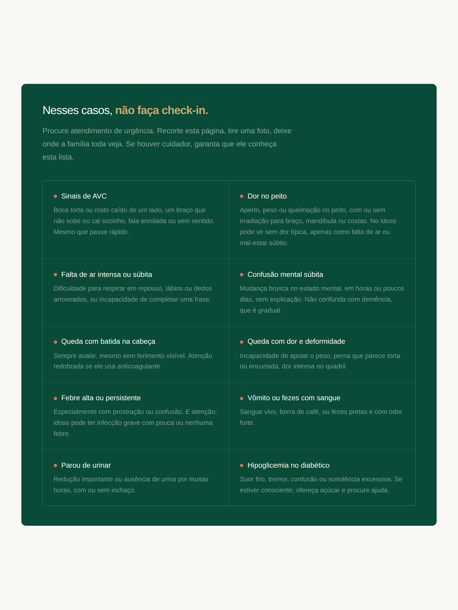

É a frase mais perigosa que um idoso pode dizer. E você escuta ela toda semana.
Quero o guia R$ 47 · acesso imediatoPDF para celular, tablet ou computador · Garantia de 7 dias
Não vai dizer que esqueceu o remédio três vezes essa semana. Não vai mencionar a tontura de quinta. Não vai contar que anda dormindo mal, que a comida perdeu a graça, que sentiu uma dor e achou melhor não preocupar ninguém.
Idoso protege filho. É uma geração inteira que aprendeu a não dar trabalho, a sofrer calado, a responder "tá tudo bem" com um sorriso. E não é falha dele nem sua.
O problema é que, sem formação em saúde, você não tem como saber o que perguntar. E o que você não pergunta, ele não conta.
Na prática clínica, a saúde de um idoso vive em uma de três faixas. E a família só enxerga duas delas.
A queda que interna não começou no chão. Começou duas semanas antes, no âmbar, e ninguém viu. É lá que dá pra agir.
A primeira é saber qual é o normal dele. Não existe valor padrão para idoso. Uma pressão que preocupa numa pessoa é a média de outra há dez anos. Sem esse parâmetro, você não tem como saber se algo mudou.
A segunda é perguntar as coisas certas, toda semana. Não "tá tudo bem?", que sempre recebe a mesma resposta. As perguntas que não deixam espaço para o automático.
É exatamente isso que eu faço com cada paciente que acompanho. E é exatamente isso que está neste guia: o método, inteiro, na sua mão.
Páginas reais do guia, sem maquiagem.




Passei anos supervisionando cuidadores e acompanhando famílias de perto. Vi o que funciona e vi o que falha. Vi famílias pagarem caro e ficarem desamparadas justamente quando mais precisavam.
E vi, dezenas de vezes, a mesma cena: a crise que assustou todo mundo tinha dado sinal semanas antes. Os sinais estavam ali. Faltava alguém que soubesse enxergar.
Este guia não é uma coletânea de dicas que eu juntei na internet. É o protocolo que eu aplico de verdade, com os pacientes que acompanho hoje, escrito em português para quem não é da área.
Sem mensalidade. Seu para sempre.
Quero o guia agora Acesso imediato após o pagamentoPix, cartão ou boleto · Garantia de 7 dias
Toda crise avisa antes. A diferença entre a família que enxerga e a que só descobre no hospital não é sorte, é método. Este é o meu, e a partir de hoje pode ser o seu.
Quero o guia R$ 47 · pagamento únicoGarantia de 7 dias · Devolução integral sem perguntas
Aviso importante. Este material tem caráter educativo e de orientação em saúde. Ele não substitui consulta médica, diagnóstico ou prescrição, e não deve ser usado para tomar decisões clínicas por conta própria. Na dúvida sobre qualquer sinal ou sintoma, procure um profissional de saúde. Em caso de emergência, procure atendimento imediato.